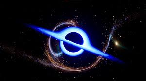
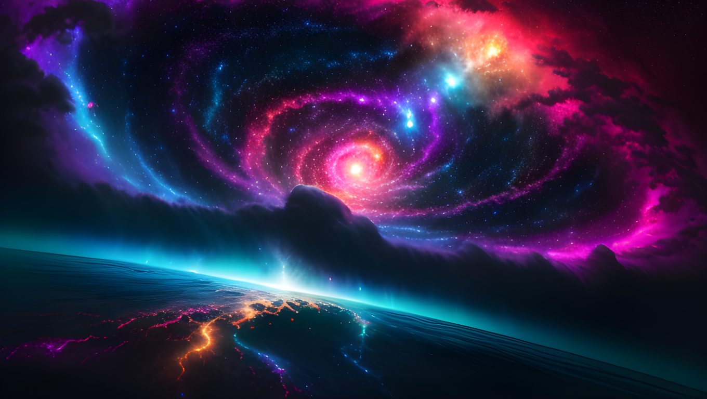

Tarak Official
Know More About Space, (Fun Facts of Space)

Galaxies: Vast cosmic cities, galaxies house billions of stars, planets, and cosmic dust. The Milky Way, our galaxy, is a spiral containing our solar system. Galaxies come in various shapes: spirals, ellipticals, and irregulars.
Dark Matter: Though invisible, dark matter exerts gravitational forces shaping the cosmos. It comprises around 27% of the universe's mass-energy content, yet its nature remains a profound mystery, challenging physicists' understanding of fundamental particles and their interactions.

Black Holes: These mysterious cosmic vacuums result from the collapse of massive stars. Gravity is so intense within them that nothing, not even light, can escape. Studying them unveils secrets of gravity and spacetime.

Dark Energy: Accounting for about 68% of the universe's content, dark energy propels its accelerating expansion. Unlike gravity, dark energy pushes galaxies apart, stretching the fabric of spacetime. Its nature is elusive, posing one of cosmology's greatest conundrums.

Supernovae: These cataclysmic explosions mark the end of a massive star's life, releasing immense energy and scattering heavy elements across space. They illuminate galaxies, enrich interstellar gas, and play a vital role in shaping cosmic evolution.

Gravitational Waves: Ripples in the fabric of spacetime, gravitational waves are produced by the most violent events in the universe, such as merging black holes or neutron stars. Their detection opens a new window to observe and understand the cosmos, confirming Einstein's predictions.
The universe contains over 100 billion galaxies, each with millions to trillions of stars, planets, and other celestial objects. Our Milky Way is just one among them, hosting billions of stars, including our Sun.

The Great Red Spot on Jupiter is a massive storm that has been raging for at least 400 years. It's so large that Earth could easily fit inside it.
The Great Red Spot on Jupiter is a massive storm that has been raging for at least 400 years. It's so large that Earth could easily fit inside it.

Neutron stars are the remnants of supernova explosions, incredibly dense objects that cram more mass than the Sun into a city-sized radius and The Great Red Spot on Jupiter is a massive storm that has been raging for at least 400 years. It's so large that Earth could easily fit inside it.